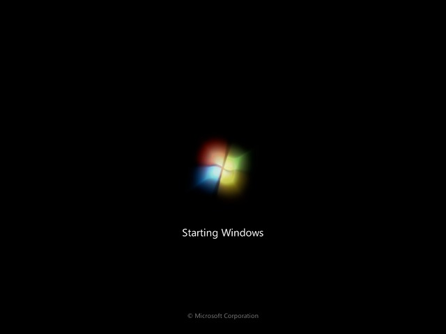
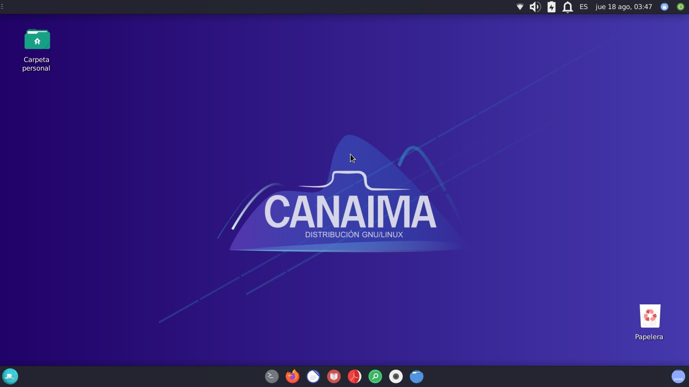
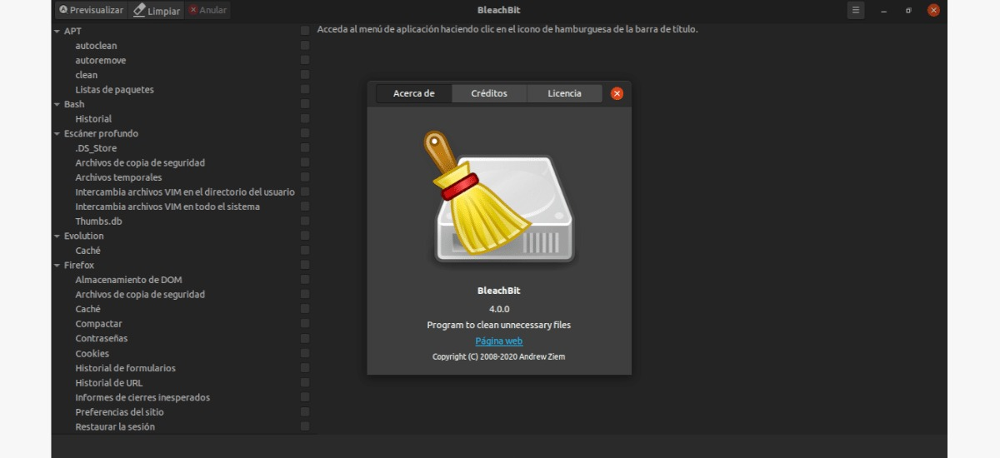
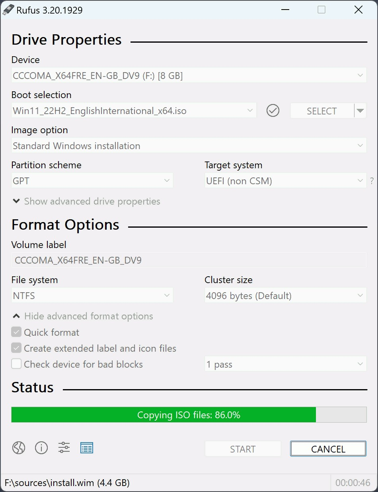

Requisitos técnicos y software a utilizar para realizar el mantenimiento adaptativo
Para la realización de la instalación de sistemas operativos es necesario los siguientes requisitos:
| Rufus | Windows7 | Linux GMU/Canaima |
|---|---|---|
|
|
|
|
Detalles de cada sistema operativo:
Windows 7
Es un sistema operativo creado por Microsoft Windows, teniendo su fecha de lanzamiento el 22 de octubre del 2009. Windows 7 cuenta con una interfaz novedosa y cómoda para la época en la que salió, siendo actualmente el tercer sistema operativo más utilizado de Microsoft.
Linux GMU/Canaima
Es un software libre creado por la CNTI y distribuida por el Gobierno Bolivariano de Venezuela, surgida como consecuencia del decreto presidencial n.º 3.390 sobre el uso de tecnologías libres en la Administración Pública Nacional (APN) venezolana. Actualmente se le conoce por ser el sistema operativo por defecto de los ordenadores portátiles Cainama, cuales son entregados gratuitamente a alumnos que estudien en instituciones educativas públicas.
Software a utilizar para realizar el mantenimiento preventivo:
BleachBit
Es un limpiador de código libre que permite eliminar archivos temporales liberando espacio en el disco duro.
Rufus
Rufus es una aplicación portable, libre y de código abierto para Microsoft Windows, ayuda a formatear y crear soportes de arranque como USB discos duros etc.
